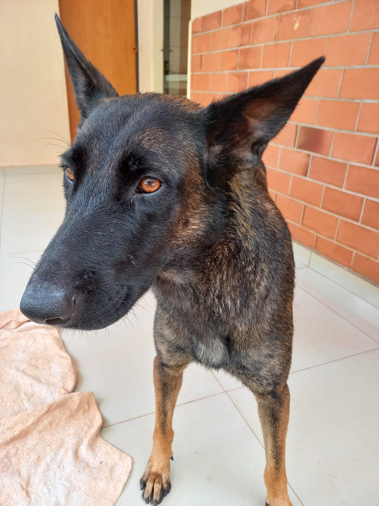

Disponível
 Desde 2018
Desde 2018
Quem Somos
Uma história de
Uma história de
amor e resgate
O Projeto Animais Sem Teto nasceu em 2018 de um simples ato de compaixão: uma família que resgatou um cãozinho das ruas e percebeu que a necessidade era muito maior.
Hoje somos uma rede de voluntários e parceiros dedicados a resgatar animais em situação de abandono, oferecer cuidados veterinários e conectá-los a famílias amorosas em todo o Brasil.
Missão
Resgatar, reabilitar e recolocar animais em lares seguros e amorosos.
Visão
Um Brasil sem animais abandonados nas ruas, onde todo pet tem um lar.
Valores
Empatia, transparência, responsabilidade e amor incondicional.